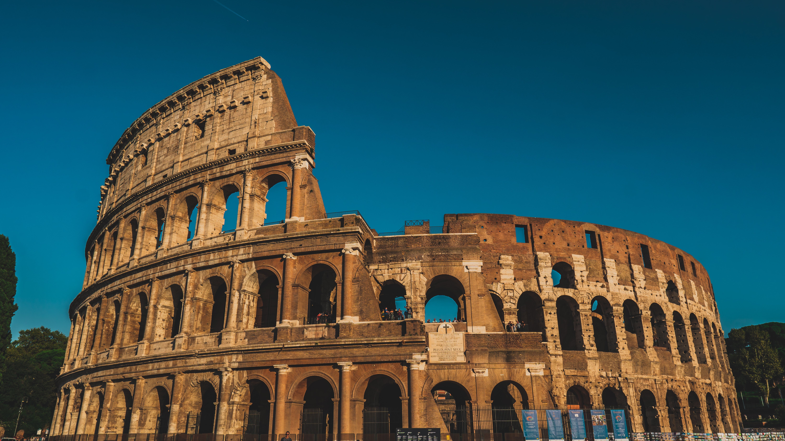

Coliseu
Coliseu (em italiano: Colosseo), também conhecido como Anfiteatro Flaviano (em latim: Amphitheatrum Flavium; em italiano: Anfiteatro Flavio), é um anfiteatro oval localizado no centro da cidade de Roma, capital da Itália. Construído com tijolos revestidos de argamassa e areia, e originalmente cobertos com travertino[1] é o maior anfiteatro já construído e está situado a leste do Fórum Romano. A construção começou sob o governo do imperador Vespasiano[2] em 72 d.C. e foi concluída em 80 d.C., sob o regime do seu sucessor e herdeiro, Tito.[3] Outras modificações foram feitas durante o reinado de Domiciano (81-96).[4] Estes três imperadores são conhecidos como a dinastia flaviana e o anfiteatro foi nomeado em latim desta maneira por sua associação com o nome da família (Flavius). O Coliseu poderia abrigar, estima-se, entre 50 mil e 80 mil espectadores,[5][6] com uma audiência média de cerca de 65 mil pessoas.[7][8] O edifício era usado para combates de gladiadores e espetáculos públicos, tais como simulações de batalhas marítimas (em um curto período de tempo como o hipogeu era inundado através de mecanismos de apoio), caças de animais selvagens, execuções, encenações de batalhas famosas e dramas baseados na mitologia clássica.[9][10] O prédio deixou de ser usado para entretenimento na era medieval. Mais tarde foi reutilizado para vários fins, tais como habitação, oficinas, sede de uma ordem religiosa, uma fortaleza, uma pedreira e um santuário cristão. Em 2007, o monumento foi eleito informalmente como uma das sete maravilhas do mundo moderno. Embora parcialmente arruinado por causa de danos causados por terremotos e saques, o Coliseu é ainda um símbolo da Roma Imperial. É uma das atrações turísticas mais populares da capital italiana e tem também conexões com a Igreja Católica Romana, pois a cada Sexta-feira Santa, o Papa guia a Via Crúcis que começa na área em torno do Coliseu.[11] O Coliseu também é retratado na versão italiana da moeda de 5 cêntimos de euro.
Torre Eiffel

Torre Eiffel (em francês: Tour Eiffel, /tuʀ ɛfɛl/) é uma torre de treliça de ferro forjado no Champ de Mars, em Paris, França. Tem o nome do engenheiro Gustave Eiffel, cuja empresa projetou e construiu a torre. Localmente apelidada de "Dama de Ferro" (em francês: La dame de fer), foi construída de 1887 a 1889 como a peça central da Exposição Universal de 1889 e foi inicialmente criticada por alguns dos principais artistas e intelectuais franceses por seu design, mas tornou-se um ícone cultural global da França e uma das estruturas mais reconhecidas do mundo.[1] A Torre Eiffel é o monumento pago mais visitado do mundo; 6,91 milhões de pessoas subiram na torre em 2015. Foi designado um monumento histórico em 1964 e foi nomeado parte do Patrimônio Mundial pela UNESCO ("Paris, Margens do Sena") em 1991.[2] A torre tem 330 metros de altura,[3] aproximadamente a mesma altura de um edifício de 81 andares, e é a estrutura mais alta de Paris. Sua base é quadrada, medindo 125 metros de cada lado. Durante sua construção, a Torre Eiffel ultrapassou o Monumento de Washington para se tornar a estrutura mais alta do mundo feita pelo homem, título que manteve por 41 anos até que o Edifício Chrysler em Nova York foi concluído em 1930. Foi a primeira estrutura do mundo mundo a ultrapassar a marca dos 200 e 300 metros de altura. Devido à adição de uma antena de transmissão no topo da torre em 1957, agora ela é 5,2 metros mais alta que o Edifício Chrysler. Excluindo os transmissores, a Torre Eiffel é a segunda estrutura autônoma mais alta da França depois do Viaduto de Millau. A torre tem três andares para visitantes, com restaurantes no primeiro e segundo níveis. A plataforma superior do andar superior fica a 276 m acima do solo – o deck de observação mais alto acessível ao público na União Europeia. Os ingressos podem ser adquiridos para subir por escadas ou elevador para o primeiro e segundo andares. A subida do nível do solo para o primeiro andar é de mais de 300 degraus, assim como a subida do primeiro nível para o segundo, fazendo toda a subida ser composta por 600 degraus. Embora haja uma escada para o primeiro andar, geralmente ele é acessível apenas por elevador.
Templo Expiatório da Sagrada Família

Templo Expiatório da Sagrada Família (em catalão: Temple Expiatori de la Sagrada Família), também conhecido simplesmente como Sagrada Família, é um grande templo católico da cidade de Barcelona, Catalunha, Espanha, desenhado pelo arquiteto catalão Antoni Gaudí, e considerado por muitos críticos como a sua obra-prima e expoente da arquitetura modernista catalã. Financiado unicamente por contribuições privadas, o projeto foi iniciado em 1882 e assumido por Gaudí em 1883, quando tinha 31 anos de idade, dedicando-lhe os seus últimos 40 anos de vida, os últimos quinze de forma exclusiva. A construção foi suspensa em 1936 devido à Guerra Civil Espanhola[1] e não se estima a conclusão para antes de 2026, centenário da morte de Gaudí. A construção começou em estilo neogótico, mas o projeto foi reformulado completamente por Gaudí ao assumi-lo. O templo foi projetado para ter três grandes fachadas: a Fachada da Natividade, quase terminada com Gaudí ainda em vida, a Fachada da Paixão, iniciada em 1952, e a Fachada da Glória, ainda por completar. Segundo o seu proceder habitual, a partir de esboços gerais do edifício Gaudí improvisou a construção à medida que esta avançava. O templo, quando estiver terminado, disporá de 18 torres:[2] quatro em cada uma das três entradas-portais, a jeito de cúpulas; irá ter um sistema de seis torres, com a torre do zimbório central dedicada a Jesus Cristo, de 170 metros de altura, outras quatro ao redor desta, dedicadas aos evangelistas, e um segundo zimbório dedicado à Virgem. O interior estará formado por inovadoras colunas arborescentes inclinadas e abóbadas baseadas em hiperboloides e paraboloides buscando a forma ótima da catenária. Estima-se que poderá levar no seu coro 1 500 cantores, 700 crianças e cinco órgãos. Em 1926, ano em que morreu Gaudí, apenas estava construída uma torre. Do projeto do edifício só ficaram planos e um modelo em gesso que resultou muito danificado durante a Guerra Civil Espanhola.[3] Desde então prosseguiram as obras: atualmente (2022) estão terminados os portais da Natividade e da Paixão, e foi iniciado o da Glória, estando em construção as abóbadas interiores. A obra realizada por Gaudí — a fachada da Natividade e a cripta — foi incluída pela UNESCO em 2005 no Sítio do Património Mundial com o título «Obras de Antoni Gaudí».[4]